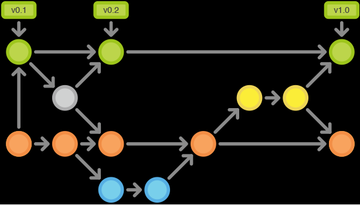
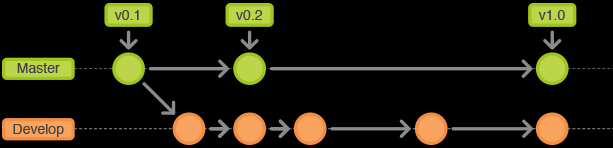
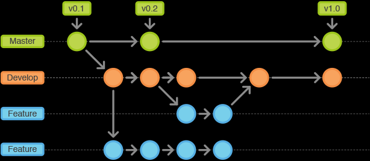
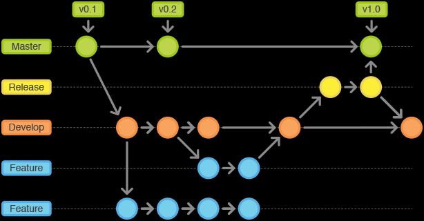
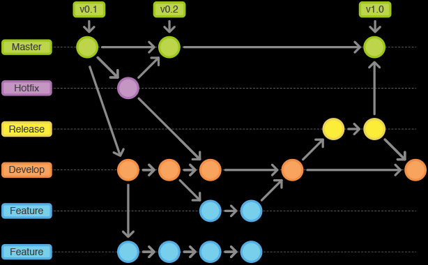

<!DOCTYPE html><html><head><meta charset="utf-8"><meta name="viewport" content="width=device-width, initial-scale=1, maximum-scale=1"><title>TKPPL | Gitflow Workflow</title><link rel="stylesheet" type="text/css" href="bower_components/prism/themes/prism.css"><link rel="stylesheet" type="text/css" href="bower_components/todc-bootstrap-main/dist/css/bootstrap.min.css"><link rel="stylesheet" type="text/css" href="styles/main-presentation.css"></head><body></body></html><nav role="navigation" class="navbar navbar-default"><div class="container"><div class="navbar-header"><button type="button" data-toggle="collapse" data-target="presentation-chooser" class="navbar-toggle"><span class="sr-only"></span><span class="icon-bar"></span><span class="icon-bar"></span><span class="icon-bar"></span></button><a href="index.html" class="navbar-brand">Teknologi Kolaborasi</a></div><div id="presentation-chooser" class="collapse navbar-collapse"><ul class="nav navbar-nav"><li class="dropdown"><a data-toggle="dropdown" href="#" class="dropdown-toggle">Pilih Presentasi <b class="caret"></b></a><ul class="dropdown-menu"><li><a href="1-Introduction.html">Pengenalan Kuliah</a></li><li><a href="2-TeknologiKolaborasi.html">Teknologi Kolaborasi</a></li><li><a href="3-PresentasiDenganBespokeJS.html">Presentasi dengan Bespoke.JS</a></li><li><a href="4-SCRUM.html">SCRUM</a></li><li><a href="5-UserStories.html">User Stories</a></li><li><a href="6-Trello.html">Trello dan Bug Reporting</a></li><li><a href="7-PengenalanKontrolVersi.html">Kontrol Versi</a></li><li><a href="8-DasarKontrolVersi.html">Dasar Kontrol Versi</a></li><li><a href="9-Commit.html">Commit</a></li><li><a href="10-LogDanHistory.html">Log dan History</a></li><li><a href="6-TugasBeSpoke.html">Tugas Be Spoke</a></li><li><a href="11-TimeMachine.html">Time Machine</a></li><li><a href="12-PushDanPull.html">Push dan Pull</a></li><li><a href="13-Branching.html">Branching (Percabangan)</a></li><li><a href="14-GitFlow.html">GitFlow Workflow</a></li></ul></li></ul></div></div></nav><article id="presentation"><section><h1>Gitflow Workflow </h1><p>Teknik Kolaborasi TI</p></section><section><h2 class="bullet">Apa itu Workflow?</h2><hr><ul><li>Workflow merupakan serangkaian cara kerja yang disepakati bersama untuk mencapai tujuan tertentu.  </li><li>Git Workflow adalah kesepakatan dalam tata cara penggunaan Git dalam kolaborasi.</li><li>Ada banyak Workflow dalam Git baik yang <a href="http://git-scm.com/book/en/Distributed-Git-Distributed-Workflows">terdokumentasi</a>ataupun tidak. </li></ul></section><section><h2 class="bullet">Gitflow Workflow</h2><hr><ul><li><a href="http://nvie.com/posts/a-successful-git-branching-model/">Gitflow</a> merupakan salah satu Workflow yang terdapat dalam Git.</li><li>Gitflow merupakan workflow central repository (satu repository yang berfungsi sebagai pusat komunikasi antara semua developer).</li><li>Jika menggunakan SourceTree maka Gitflow merupakan salah satu fitur didalamnya.</li></ul></section><section><h2 class="bullet">Cabang Sejarah</h2><hr><ul><li>GitFlow menggunakan dua cabang sebagai cabang sejarah yaitu cabang master dan develop.</li><li>Master merupakan cabang untuk sejarah rilis ofisial.</li><li>Umumnya setiap commit baru di Master diberi Tag versi.</li><li>Develop merupakan cabang untuk integrasi terhadap fitur-fitur.</li></ul></section><section><h2 class="bullet">Cabang Fitur</h2><hr><ul><li>Cabang fitur dibuat setiap kali ada fitur baru.</li><li>Cabang fitur dipecah dari cabang develop dan digabungkan kembali ke develop apabila sudah selesai.</li><li>Cabang fitur tidak boleh berhubungan dengan cabang master.</li><li>Setiap fitur baru memiliki satu cabang sendiri.</li></ul></section><section><h2 class="bullet">Cabang Rilis</h2><hr><ul><li>Ketika cabang develop sudah memiliki banyak fitur maka cabang rilis akan dipecah dari cabang develop.</li><li>Dalam cabang develop hanya berisikan pembuatan dokumentasi, bug fixes, dan hal-hal lain untuk persiapan rilis.</li><li>Ketika sudah siap dirilis, cabang rilis akan digabungkan ke cabang master dan develop dan diberi tag versi.</li></ul></section><section><h2 class="bullet">Cabang Perbaikan</h2><hr><ul><li>Cabang perbaikan (hotfix) digunakan secara cepat memperbaiki bug yang krusial di cabang master.</li><li>Cabang perbaikan dipecah dari cabang master dan digabungkan setelah selesai ke cabang master kembali.</li><li>Umumnya versi minor dari master akan bertambah setelah ada gabungan dari cabang perbaikan.</li></ul></section><section><h2 class="bullet">Contoh GitFlow Workflow</h2><h3>Sebelum memulai buat cabang develop dari cabang master.</h3><code class="language-bash"><pre>$ git checkout develop</pre></code><h3>Kemudian push ke origin</h3><code class="language-bash"><pre>$ git push -u origin develop
</pre></code></section><section><h2 class="bullet">Tim Cloning</h2><h3>Semua anggota tim cloning dari repositori pusat tersebut.</h3><code class="language-bash"><pre>$ git clone ssh://user@host/path/to/repo.git</pre></code><h3>Kemudian membuat cabang develop dari origin.</h3><code class="language-bash"><pre>$ git checkout -b develop origin/develop
</pre></code></section><section><h2 class="bullet">Contoh kasus Fitur baru</h2><h3>Ketika membuat fitur baru buat cabang baru dari develop dan beri nama cabang sesuai nama fiturnya</h3><code class="language-bash"><pre>$ git checkout -b fitur-A develop		</pre></code><h3>Setelah itu coding, dan commit.</h3></section><section><h2 class="bullet">Ketika fitur selesai</h2><h3>Setelah selesai fitur digabungkan kembali ke develop dan dihapus.</h3><code class="language-bash"><pre>$ git pull origin develop
$ git checkout develop
$ git merge some-feature
$ git push origin develop
$ git branch -d some-feature		
</pre></code></section><section><h2 class="bullet">Mempersiapkan rilis</h2><h3>Setelah sebuah cabang develop telah berisikan banyak fitur saatnya mempersiapkan rilis</h3><h3>Buat cabang rilis baru dan perbaiki bug, dokumentasi, testing dan lainnya yang berhubungan dengan rilis.</h3><code class="language-bash"><pre>$ git checkout -b release-0.1 develop
</pre></code></section><section><h2 class="bullet">Membuat rilis</h2><h3>Setelah persiapan rilis selesai, cabang rilis digabungkan ke cabang master dan develop kemudian dihapus.</h3><code class="language-bash"><pre>$ git checkout master
$ git merge release-0.1
$ git push
$ git checkout develop
$ git merge release-0.1
$ git push
$ git branch -d release-0.1		
</pre></code></section><section><h2 class="bullet">Berikan tag versi baru di master</h2><h3>Setiap kali menggabungkan cabang rilis ke master, maka master diberi tag versi baru.</h3><code class="language-bash"><pre>$ git tag -a 0.1 -m &quot;Initial public release&quot; master
$ git push --tags
</pre></code></section><section><h2 class="bullet">Penemuan bug setelah rilis</h2><h3>Setelah rilis apabila ditemukan bug maka harus diperbaiki di cabang perbaikan.</h3><h3>Buat cabang perbaikan dari master dan perbaiki, setelah itu gabungkan ke master dan develop serta dihapus.</h3><code class="language-bash"><pre>$ git checkout -b issue-#001 master
# Fix the bug
$ git checkout master
$ git merge issue-#001
$ git push
$ git checkout develop
$ git merge issue-#001
$ git push
$ git branch -d issue-#001
</pre></code></section></article><script src="bower_components/bespoke.js/dist/bespoke.min.js"></script><script src="bower_components/bespoke-bullets/dist/bespoke-bullets.min.js"></script><script src="bower_components/bespoke-scale/dist/bespoke-scale.min.js"></script><script src="bower_components/bespoke-hash/dist/bespoke-hash.min.js"></script><script src="bower_components/bespoke-progress/dist/bespoke-progress.min.js"></script><script src="bower_components/bespoke-state/dist/bespoke-state.min.js"></script><script src="bower_components/prism/prism.js"></script><script src="bower_components/prism/components/prism-bash.min.js"></script><script src="scripts/main.js"></script><script src="bower_components/jquery/jquery.min.js"></script><script src="bower_components/todc-bootstrap-main/dist/js/bootstrap.min.js"></script>